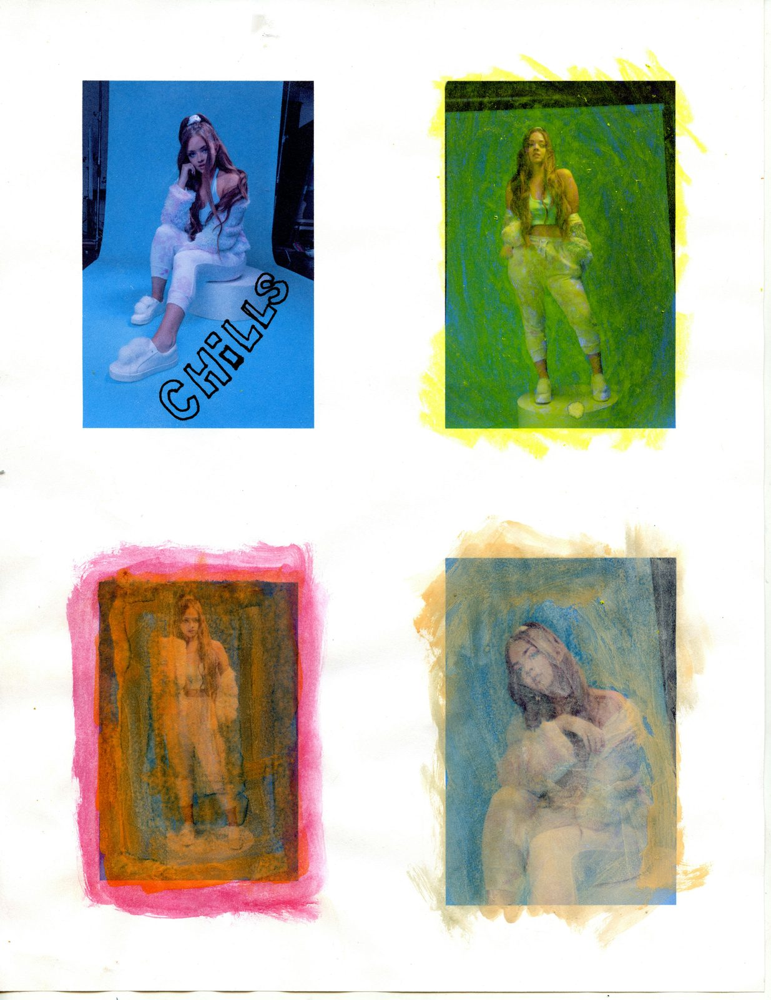
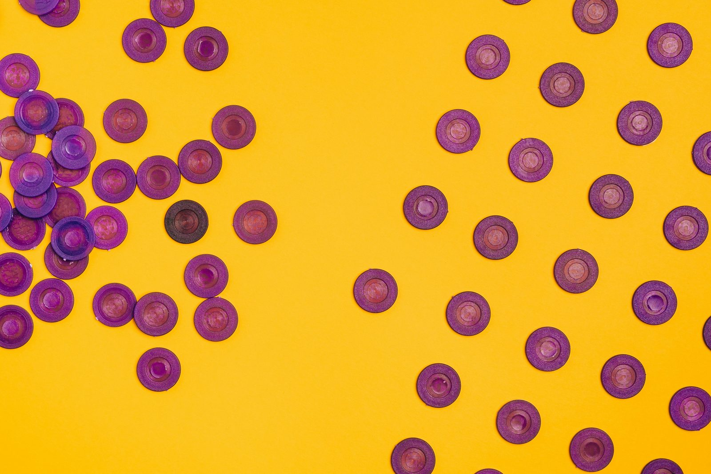

The questions patients actually ask, about IVF, egg freezing, endometriosis, and ovarian reserve.
— Dr Yuval Fouks, Melbourne
When to see a fertility specialist, what to expect at the first appointment, and how Medicare fits in.
If you are under 35 and have been trying to conceive for 12 months without success, or under 35 with known risk factors like irregular cycles, endometriosis, or previous pelvic surgery, it is reasonable to book an appointment. If you are 35 or older, I suggest seeing a specialist after 6 months of trying. If you are 40 or older, do not wait. See someone within 3 months.
The earlier the assessment, the more options you preserve. A first appointment is not a commitment to treatment. It is a chance to map where you stand: hormone levels, ovarian reserve, partner sperm parameters where relevant, and any anatomical factors. Most patients leave with a clearer picture of their timeline and which interventions, if any, make sense.
The earlier the assessment, the more options you preserve.
The first visit takes around 45 minutes. I review your history, menstrual cycle patterns, previous pregnancies or losses, and family history. I order baseline tests: AMH, day-2 or day-3 FSH and oestradiol, TSH, prolactin, vitamin D, and a pelvic ultrasound for antral follicle count. If you have a male partner, a semen analysis is essential and best done in the same week.
I do not order tests for the sake of ordering them; every investigation should change a management decision. By the end of the appointment you will have a clear plan and an indication of what comes next, including timing, costs, and what is covered by Medicare.
Every investigation should change a management decision.
Medicare provides significant rebates for diagnostic investigations, specialist consultations, and IVF stimulation cycles when clinically indicated. There is no annual cap on the number of stimulated cycles Medicare will support. However, Medicare does not cover the full cost of IVF; patients pay out-of-pocket for clinic fees, embryology, freezing, and storage.
As a rough guide in 2026, a stimulated IVF cycle in Melbourne costs around 5,000 to 6,000 AUD out of pocket after Medicare and Extended Medicare Safety Net rebates. Elective egg freezing is not Medicare-rebated because there is no medical indication. Expect to pay closer to 8,000 to 10,000 AUD per cycle. Medical egg freezing for fertility preservation before cancer treatment is rebated.
There is no annual cap on the number of stimulated cycles Medicare supports.
What AMH actually measures, how to interpret your result, and what to do if your reserve is lower than expected.
AMH (anti-Mullerian hormone) is a blood test that estimates the size of your remaining egg supply, your ovarian reserve. It does not predict natural fertility, embryo quality, or whether you will conceive. What it does predict reasonably well is how your ovaries will respond to IVF stimulation.
Normal ranges shift with age: at 30, the median is around 15–25 pmol/L; at 35, around 10–15; at 40, around 5–10; at 42 and beyond, often below 5. An AMH below the 10th percentile for your age suggests diminished reserve, which changes how I plan a stimulation cycle but does not mean you cannot conceive. AMH should always be interpreted alongside antral follicle count on ultrasound, not in isolation.
AMH measures quantity, not quality, and not natural fertility.
No. AMH measures quantity of eggs, not quality. A 35-year-old with AMH of 4 pmol/L still has eggs that can produce healthy embryos; there are just fewer of them. What low AMH does mean is that the window for action is narrower. If you have low AMH and want children, the conversation shifts from "should I wait" to "what should I do now."
Research from our group has shown that women with diminished ovarian reserve do not have higher rates of embryo aneuploidy compared to age-matched peers with normal reserve. Live birth rates per embryo are similar. The challenge is getting embryos in the first place, which is why stimulation protocols matter more for these patients.
Low AMH means narrower window, not lower embryo quality.
Two tests together: AMH from a blood sample (can be done on any day of the cycle, no fasting required) and antral follicle count (AFC) from a transvaginal ultrasound, ideally in the early follicular phase. AMH gives you a number; AFC lets me see the follicles directly. The two should broadly agree, when they disagree, the AFC usually wins because it is a direct count.
FSH on day 2 or 3 of the cycle is a third marker but less reliable in isolation than AMH or AFC. I rarely use FSH alone to make decisions. If someone is told their reserve is low based on one FSH result, get the AMH and AFC before drawing conclusions.
Never make decisions on a single FSH result. Get AMH and AFC.

When to consider it, how many eggs to bank, what success rates actually look like, and what it costs in Melbourne.
The honest answer: ideally before 35. After 35, egg quality declines steeply, and after 38 the curve gets steeper still. By 40, the number of mature eggs you can freeze per cycle drops and the live birth rate per frozen egg drops with it.
If you are 30 to 34 and certain you are not ready to conceive in the next few years, this is the window where egg freezing gives the best return on the investment. If you are 35 to 37, it is still worth doing but you may need more than one cycle to bank a reasonable number of eggs. After 40, elective egg freezing has limited benefit in most cases, the conversation often shifts to whether donor eggs or proceeding to IVF now makes more sense. Use the calculator below to estimate your specific case.
Before 35 is the sweet spot. After 40, the maths gets hard.
Honestly, there is no strong research-backed answer to this question because almost all the published evidence comes from women who froze eggs for a medical reason and later returned to use them, which is a small and unrepresentative group. The numbers below are the best available estimates from registry data and modelling studies, not from large prospective trials.
Aim for 15 to 20 mature eggs frozen if you want a reasonable chance at one live birth, and 20 to 30 if you want a chance at two. These numbers assume freezing before age 35. For every year past 35, expect to need more eggs per child because thaw and fertilisation rates and embryo quality decline with the age at freezing, not the age at thaw.
One stimulation cycle typically yields 8 to 15 mature eggs depending on AMH, age, and protocol. So most patients freezing in their early thirties need one cycle; patients in their late thirties often need two. I plan the number of cycles upfront based on your AMH and antral follicle count rather than guessing after the first cycle.
15 to 20 eggs is the realistic target for one child, if frozen before 35.
Elective egg freezing (no medical indication) typically costs around 8,000 to 10,000 AUD per cycle in Melbourne in 2026. This includes specialist fees, ultrasounds, stimulation drugs, egg retrieval, and the first year of storage. Storage after the first year is usually 500 to 800 AUD per year. Medicare does not rebate elective freezing.
Medical egg freezing, for example before chemotherapy, for severe endometriosis with planned surgery, or for premature ovarian insufficiency, is Medicare-rebated and the out-of-pocket cost is significantly lower, often 3,000 to 4,000 AUD. Before committing, I recommend a single consultation to confirm whether your case qualifies for the medical pathway.
Medical egg freezing can be Medicare-rebated. Always ask if your case qualifies.
Per mature frozen egg from a woman under 35, the chance of a live birth is roughly 6 to 8 percent. That is why 15 to 20 eggs is the typical target; it gives a cumulative chance of around 70 percent for one child. For eggs frozen between 35 and 37, the per-egg live birth rate drops to around 4 to 5 percent. After 38, it drops further to 2 to 3 percent per egg.
These figures are based on Australian and international registry data and assume modern vitrification (flash-freezing). Older slow-freeze techniques had much lower thaw survival and should not be used now. The age at freezing is the dominant factor; the age at thaw matters far less.
The age you freeze at is what matters. The age you thaw at, much less so.
How the cycle works, what success rates actually mean for your situation, and what affects outcomes.
A standard IVF cycle takes around two weeks from start of stimulation to egg retrieval. You inject hormones daily for 9 to 12 days to stimulate multiple follicles. You have 3 to 4 monitoring scans during that period. When follicles are mature, you trigger ovulation with a final injection, then have egg retrieval 36 hours later under light sedation.
Eggs are fertilised in the lab (with ICSI if male factor is present) and embryos are grown for 3 to 5 days. From there, embryos can be transferred fresh, or frozen for a later transfer. Increasingly we freeze all embryos and transfer in a subsequent month, and this gives the uterus time to recover from stimulation and typically results in better outcomes.
Two weeks of stimulation. Then time for the uterus to recover before transfer.
It depends mostly on age and the cause of infertility. Per stimulated cycle in Australia, the live birth rate is roughly 35 percent at age 30, 30 percent at age 35, 20 percent at age 38, 10 percent at age 40, and under 5 percent at age 42. These are per-cycle figures; cumulative success across 3 cycles is significantly higher.
Cause of infertility matters: tubal factor and male factor have the best outcomes, diminished ovarian reserve and advanced maternal age the worst. I always quote individualised numbers based on your age, AMH, antral follicle count, BMI, and any prior cycle outcomes. National averages are a starting point, not a prediction.
National averages are a starting point, not a prediction.

When to operate, when to skip surgery, and how endometriosis actually affects IVF outcomes.
Not always, and this is one of the most contested decisions in reproductive medicine. Surgery for endometriomas (ovarian cysts) can reduce ovarian reserve, especially if both ovaries are operated on. If your AMH is already low, surgery may do more harm than good. On the other hand, deep infiltrating endometriosis affecting the bowel or bladder, severe pain that limits quality of life, or hydrosalpinges (blocked dilated tubes) often do require surgical management before or alongside IVF.
My approach: assess ovarian reserve first, then decide. For most patients with endometriomas under 4 cm and reasonable AMH, I lean toward proceeding directly to IVF and only operating if there is a specific indication. For severe disease with significant pain, surgery first is often the right call.
Assess ovarian reserve before deciding on surgery. The order matters.
Yes, but less than many patients fear. Endometriosis affects egg quality and the receptivity of the uterine lining in some women, but in IVF the impact is mainly on the number of eggs retrieved rather than the chance per embryo. Once you have a good-quality embryo, the chance of pregnancy is similar to women without endometriosis.
The exception is severe deep infiltrating endometriosis affecting the uterus, which can lower implantation rates and may benefit from pre-treatment with GnRH agonists for 2 to 3 months before transfer. I do not routinely recommend this for everyone with endometriosis, only where there is good reason. Each plan needs to weigh the specific endometriosis stage, location, ovarian reserve, and prior treatment history.
Once you have a good embryo, endometriosis matters less than people fear.
Yes, and often you should, sooner rather than later. Endometriomas can reduce ovarian reserve over time even without surgery, and the surrounding ovarian tissue is often affected. If you have an endometrioma and want children in the future, freezing eggs before any planned surgery is a reasonable precaution.
I particularly recommend this if surgery is being considered, if AMH is already below your age-expected range, or if there are bilateral endometriomas. The stimulation cycle itself is not made significantly more difficult by the cyst as long as it is not infected or causing acute symptoms. We aim to retrieve eggs without entering the cyst itself.
If surgery is on the table, freeze eggs first.
Send me a message or book a consultation. The right plan starts with a real conversation.
Book a Consultation Send a Question